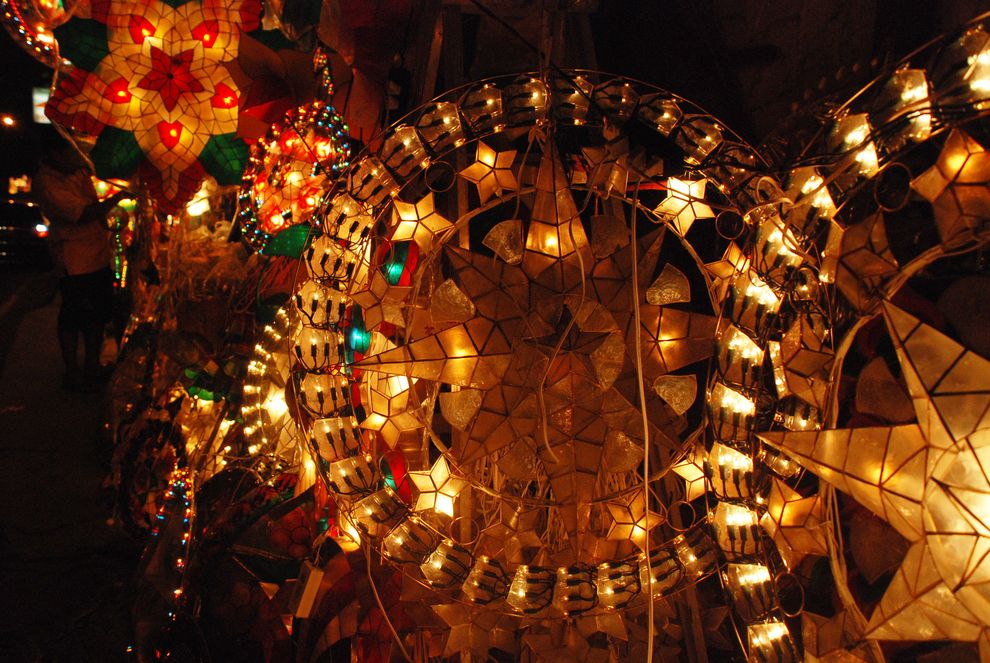

Zacapa tiene una variedad de costumbres y tradiciones que reflejan su rica herencia cultural. Aquí te comparto algunas de las más destacadas:
Religión y Festividades: La Semana Santa es una celebración importante en Zacapa, donde se realizan procesiones y eventos religiosos. Además, en diciembre se celebra la festividad de la Virgen de laConcepción, con eventos culturales y carreras de caballos.
Danzas Tradicionales: Las mojigangas son una danza tradicional que involucra comparsas desfilando por las calles, enmascarados y vestidos con trajes coloridos.
K'iche': Hablado principalmente en los departamentos de Quiché, Totonicapán y Quetzaltenango.
 Volver